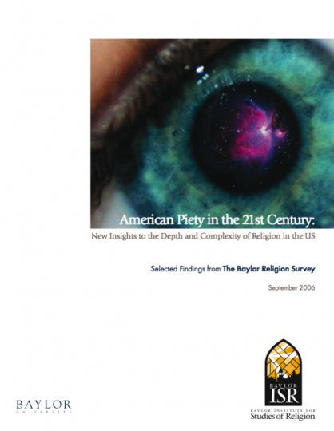

Religion
The subject of Americans’ beliefs was another that Dykman felt deserved critical scrutiny. He considered two ways of approaching a spread about religion:
1. Who’s in Church? “There’s lots of empirical evidence that Americans aren’t nearly as religious as they profess,” he says. “Most of these themes come from… arguments I have with myself. The religion thing started because I had an argument: darn it, people aren’t as religious as they say they are.” He continues:
Religious [studies tend] to be about polling, and people lie to pollsters. The odd thing is, people will tell the truth about money, they’ll tell the truth about sex, and they’ll lie about religion to pollsters all the time.
He had long wanted to address this subject in the magazine. About 10 years earlier, he had read a study that compared 30 years of polling data on church attendance. The authors found that the number of Americans who reported attending church every week had held steady at around 40 percent for the entire period. But counting the number of people in church yielded a much lower rate of attendance—closer to 20 percent.[21]
Meanwhile, the Bureau of Labor Statistics, a statistical research agency serving the federal government, had also been gathering data on this subject. The Bureau collected information on labor economics and statistics, and in the course of such work, it had undertaken a time use survey to determine how Americans spent their days. Thousands of respondents recounted their activities, minute by minute, to the Bureau’s researchers. “Nobody ever mentions going to church,” Dykman says. They reported precisely how many minutes they spent watching TV, taking care of children or doing housework, but far fewer than 40 percent mentioned church.[22] “But if you poll those same people,” Dykman emphasizes, “40 percent say they go to church. There has always been this creeping evidence of things like that, which I always found really interesting.”
2. Baylor Survey. By an accident of good timing, Dykman had read a study that week that offered a fresh and timely examination of American religion. Sociologists at Texas’ Baylor University had produced a study called American Piety in the 21st Century, during the course of which researchers asked nearly 2,000 participants 29 questions about God’s “character and behavior.”[23] Based on the results, Baylor’s researchers had extracted “two clear and distinct dimensions of belief in God.” The first pertained to God’s level of engagement in human affairs; the second, to God’s level of dissatisfaction with the human race. Based on these factors, the Baylor study identified four distinct ways of viewing God—as benevolent, authoritarian, distant or critical. The study went on to explore the impact respondents’ perceptions of God had on their daily lives and policy stances.
These results were unlike those of typical religion surveys Dykman had read, which were based on data about poll respondents’ reported church attendance and religious denominations. Though the study did not speak to Dykman’s conviction that Americans are not as religious as they professed to pollsters, it could provide a timely supplement to the concept he had been considering.
Footnotes
[21] C. Kirk Hadaway, Penny Long Marler, and Mark Chaves, “What the Polls Don’t Show: A Closer Look at US Church Attendance,” American Sociological Review, Vol. 58, Issue 6, December 1993, p. 741-753.
[22] Stanley Presser and Linda Stinson, “Data Collection Mode and Social Desirability Bias in Self-Reported Religious Attendance,” American Sociological Review, Vol. 63, Issue 1, February 1998, p. 137-145.
[23] Baylor University, American Piety in the 21st Century, September 2006.